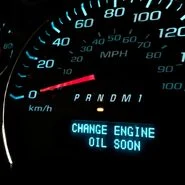

Helpfull tips and tricks as well as commen questions

Helpfull Information
Before installing the new oil filter, apply a little motor oil to the new O ring. This will prevent the gasket from sticking, cracking or causing an oil leak. Write down the date you performed the oil change and the amount of miles the car had so you know when your next change is due The “every 3,000 miles or every three months” rule is outdated because of advances in both engines and oil. Many automakers have oil-change intervals at 7,500 or even 10,000 miles and six or 12 months for time
Questions
"How do I know what type of oil my car takes/Filter size?" you can check your owners manual for that information or you can go to your local auto parts store and if you tell the employees the make and model of your car the can look it up and tell you exactly how much oil you need and what filters they have in stock for your car "Ok I changed my oil what do i do with the old oil" The best way to dispose of motor oil is to recycle it. many service stations, quick lubes, and auto parts stores will accept used motor oil and used oil filters at no charge